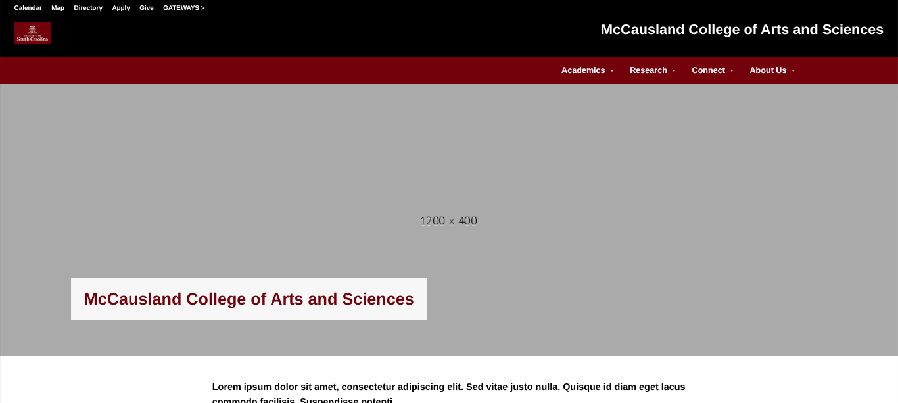
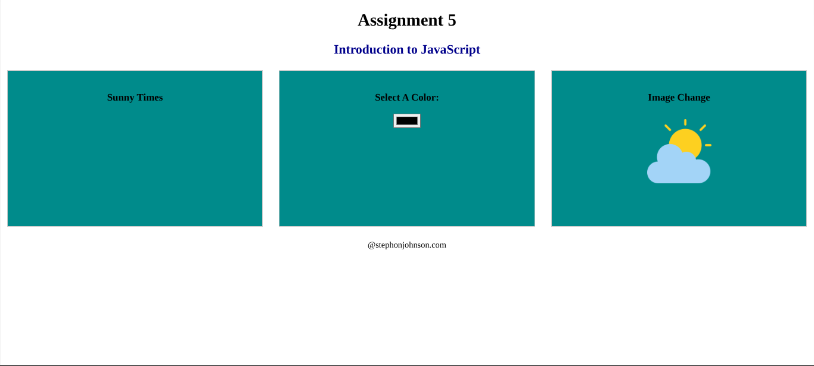
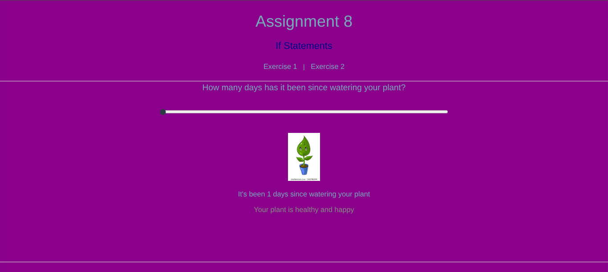
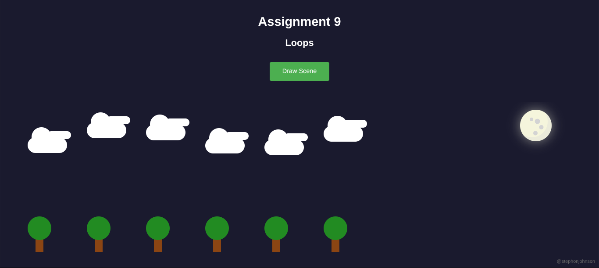
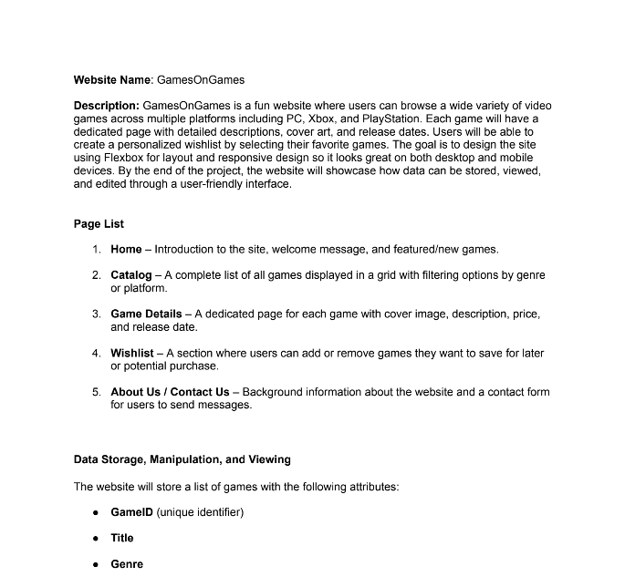
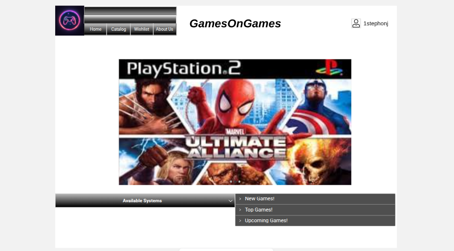
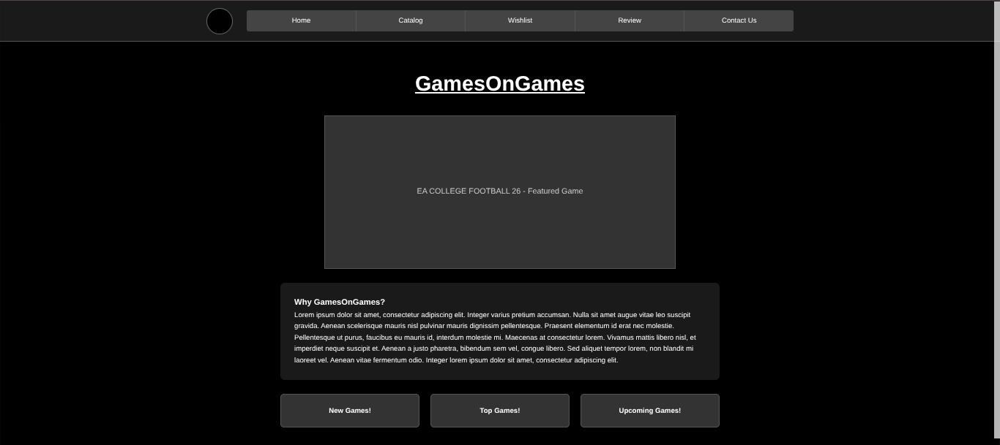
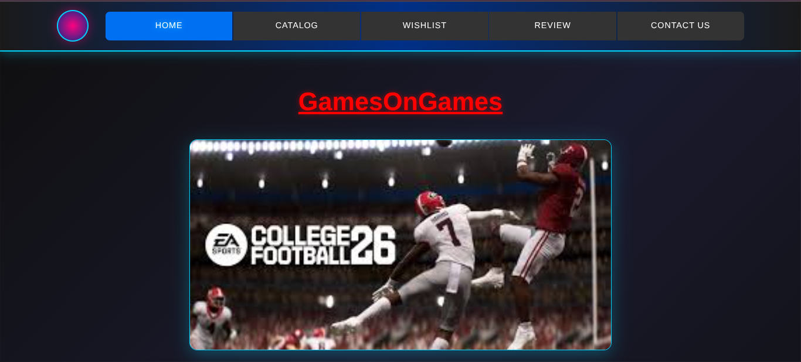

CSCE 242: Web Applications
Stephon Johnson
Description: Web Applications is a course that involves students using HTML and CSS to create a front-end webpage. They will then use JavaScript to add functionality to their website and retrieve data from a server.

Assignment 1: Basic HTML
In this assignment, I implemented basic HTML elements such as headers, paragrpahs, and tables.
View Assignment
Assignment 2: Basic CSS
In this assignment, I focused on styling with CSS, adding colors, fonts, spacing, and hover effects to a webpage.
View Assignment
Assignment 3: Layout with Flex
In this assignment, I used Flexbox to create a webpage layout with a header, sidebar, and a gallery. The gallery items are styled with different colors and adjust to stack vertically on smaller screens.
View Assignment
Assignment 4: Recreate CSS Page
In this assignment, I was tasked with recreating the UofSc McCausland College of Arts and Sciences website.
View Assignment
Assignment 5: Introduction to JavaScript
In this assignment, I created a page using JavaScript buttons, functions, and other JavaScript conventions use in class.
View Assignment
Assignment 6: JavaScript Conditionals
In this assignment, I created a page using JavaScript conditionals used in class.
View Assignment
Assignment 9: JavaScript Loops
In this assignment, I created a page using JavaScript when 6 trees along with 6 clouds were generating using for loops by clicking a button.
View AssignmentProjects

Project Part 1: Topic (PDF)
This project outlines the selected topic and includes its details in PDF format.
View Project PDF
Project Part 2: Wireframe
This is a wireframe of my project topic.
View Project Wireframe
Project Part 3: HTML and CSS
This is a multi-page website with multiple linked HTML pages, styled with CSS and responsive layout, based on the approved wireframe.
View Project Website
Project Part 4: Colors, Pictures, and Text
Added a color scheme, pictures, and text to the previous multi-page website.
View Project Website